Created创建 Updated最后更新
Optics · 02
The Electromagnetic Theory of Light
1. How a Magnetic Field Changes Light: 1845
The wave theory could already account for many details of interference, diffraction, and polarization, but what the ether that carries light vibrations actually was remained without a definite answer. In the early nineteenth century Thomas Young had conjectured that the ether transmitting electrical action and the ether carrying light vibrations might be one and the same, and he proposed an experiment on changing the refraction of a liquid by electrical action to test this conjecture. Michael Faraday also tried to influence the propagation of light by electricity and magnetism. In 1845 he found that a magnetic field can change the polarization direction of light passing through a transparent medium, providing experimental evidence for a connection between light and magnetism [2, §6.2].
The principle of the experiment is shown in Fig. 1. Light passes in turn through a polarizer, a piece of glass, and an analyzer. The transmission axis of the polarizer lies along x, so that the transmitted light vibrates along x; once the coil around the glass is energized, it produces inside the glass a magnetic field directed along the propagation direction of the light. The transmission axis of the analyzer initially lies along y, perpendicular to the polarizer. In what follows we neglect absorption by the glass and denote the intensity and amplitude of the light reaching the analyzer by I_0 and A.
No magnetic field: the two polarizers are crossed, and the region behind the analyzer is dark.
With the coil unenergized, the light still vibrates along x after passing through the glass. The analyzer transmits only the component vibrating along y, so the transmitted amplitude and intensity are
\begin{aligned} A_{\mathrm t}&=A\,\hat{\mathbf x}\cdot\hat{\mathbf y}=0,\\ I&=0. \end{aligned}This is the extinguished state of Fig. 1(a) and the baseline for the comparisons that follow.
Applying the magnetic field: with the analyzer fixed, transmitted light appears behind it.
Energize the coil while keeping the positions and orientations of both polarizers unchanged, and light appears behind the analyzer. If the vibration direction of the light after the glass is rotated by an angle \beta relative to the x axis, its direction unit vector can be written as
\hat{\mathbf p} =\hat{\mathbf x}\cos\beta+\hat{\mathbf y}\sin\beta.Its projection onto the analyzer's transmission axis is no longer zero. Since the intensity is proportional to the square of the amplitude,
\begin{aligned} A_{\mathrm t} &=A\,\hat{\mathbf p}\cdot\hat{\mathbf y} =A\sin\beta,\\ I&=I_0\sin^2\beta. \end{aligned}Thus part of the light that the analyzer previously blocked can now pass, corresponding to Fig. 1(b). This is also a direct consequence of Malus's law I=I_0\cos^2\theta: the angle between the light's vibration direction and the analyzer's transmission axis is now \theta=\pi/2-\beta [1, §8.2.1].
Keeping the magnetic field, rotate the analyzer: the transmitted light disappears again.
The brightening behind the analyzer alone does not yet determine how the polarization state of the light has changed. Keeping the magnetic field fixed, rotate the analyzer by an angle \alpha from its original y direction; its transmission axis becomes
\hat{\mathbf a} =-\hat{\mathbf x}\sin\alpha+\hat{\mathbf y}\cos\alpha.The projection of the emerging light onto this axis gives
\begin{aligned} A_{\mathrm t} &=A\,\hat{\mathbf p}\cdot\hat{\mathbf a} =A\sin(\beta-\alpha),\\ I&=I_0\sin^2(\beta-\alpha). \end{aligned}When \alpha=\beta, the region behind the analyzer becomes dark again. The fact that extinction can be restored by rotating the analyzer shows that the emerging light is still linearly polarized, merely with its vibration direction rotated by \beta; the angle through which the analyzer is rotated from its original extinction position then gives this rotation angle.
Reversing the magnetic field: the polarization direction rotates to the opposite side.
Reverse the coil current, and the magnetic field inside the glass reverses as well, so the polarization rotation angle changes from \beta to -\beta. If the analyzer is still placed in its original y direction, the transmitted intensity is
I=I_0\sin^2(-\beta)=I_0\sin^2\beta.Hence brightness alone cannot distinguish the direction of rotation. To restore extinction, the analyzer must be rotated from its original position by the same angle in the opposite direction, that is, \alpha=-\beta, as shown in Fig. 1(c). The extinction position changes when the magnetic field reverses, showing that the direction of the polarization rotation is controlled by the magnetic field.
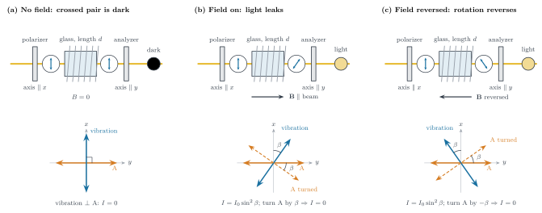
This phenomenon is called the Faraday effect. For a given wavelength, temperature, and medium, the rotation angle in a uniform longitudinal magnetic field satisfies
where B is the component of the magnetic induction along the propagation direction of the light, d is the length over which the light passes through the medium, and \mathcal V is the Verdet constant [1, §8.11.2].
Faraday's experiment showed that a magnetic field can change the polarization direction of light through a medium, and that a connection between light and magnetism indeed exists. But this discovery was not yet sufficient to say what light is. To go further and build an electromagnetic theory of light, one must still study how electromagnetic action propagates.
2. The Speed of Light and Electrical Measurements: 1849–1857
Before 1849, the order of magnitude of the speed of light could only be estimated from astronomical observations: in 1676 Ole Rømer inferred from timing deviations in the eclipses of Jupiter's moons that light propagates at a finite speed, and James Bradley later narrowed its rough range from the annual variation in stellar positions [1, §1.4]. To measure the speed of light directly on the ground over a distance of a few kilometers required a “shutter” that could open and close repeatedly within an extremely short time, because light covers a round trip of a few kilometers in only about 6\times10^{-5} s. In 1849 Hippolyte Fizeau carried out this measurement outside Paris [1, §1.4].
The apparatus was laid out along a straight line: at the near end were a light source, a telescope for observation, a tilted half-silvered mirror, and a wheel with teeth cut along its rim, while the distant mirror stood at a one-way distance L\approx8.6 km from the near end (from Suresnes to Montmartre in Paris, 8633 m). Light from the source was deflected by the half-silvered mirror toward the rim of the wheel and emerged through the gap between two teeth; it traveled the one-way distance L to the distant mirror, returned along the same path, passed once more through a gap in the same gear, and then entered the telescope through that mirror.
The key to the design was to let the same gear control the passage of light twice: the first time it chopped the continuous light into a train of pulses, and the second time it tested whether the gaps were still open when those pulses returned. Although the source emitted light continuously, the light emerging past the gear was intermittent. While the light made its round trip, the wheel kept rotating; by adjusting its rotation rate one could make the returning pulses coincide with, or miss, the intervals when a gap was open. The eye cannot resolve each short pulse, so what was seen in the telescope was their average brightness.
Let the wheel have N teeth and N gaps, with teeth and gaps equally wide, and let it rotate f times per second. The time interval between two successive gaps arriving at the light path is T=1/(Nf), and each opening lasts T/2. The round-trip time of the light is denoted \tau=2L/c; it does not change with the rotation rate of the wheel.
In Fig. 2(b)–(d) the first row shows the intervals when a gap is open, and the second row shows the intervals when light returns to the gear after one round trip. Returning light can pass only if it catches a gap open, so the third row retains only the overlap of the first two rows, representing the light that finally enters the telescope. In what follows we neglect the width of the light beam and treat the teeth as completely opaque.
Lower rotation rate: the returning pulse still overlaps the open interval.
When \tau<T/2, the leading part of the returning pulse still catches the gap open, while the trailing part is blocked by the tooth that arrives next. Figure 2(b) takes T=4\tau: each gap stays open for 2\tau, and the returning pulse overlaps it for only \tau, so the transmitted pulses become narrower and the average brightness drops. At still lower rotation rates the two rows overlap more and the returning light is brighter.
First extinction: the returning bright interval meets the teeth.
When the rotation rate increases to T=2\tau (that is, T/2=\tau), the returning pulse just misses the interval when the gap is open, as in Fig. 2(c). All light that set out while the gap was open is blocked by a tooth when it returns; and at the moments when the gap is open on the return, no light passed through at the corresponding departure time. The third row is therefore always 0, and ideal extinction occurs. An actual measurement looks for a minimum in the returning brightness; the finite beam width, stray light, and errors in the teeth all keep this minimum from being zero.
Doubling the rotation rate: the returning pulse coincides with the next open interval.
The period is now shortened to T=\tau, so the returning pulse is delayed by exactly one period and realigns with the interval when the current gap is open, as in Fig. 2(d). Every returning pulse passes, and the average brightness recovers. Raising the rotation rate further produces alternating minima and maxima of brightness.
The experiment had to record three quantities: the one-way distance L, the number of teeth N, and the rotation rate f_1 at the first brightness minimum. The condition for the first extinction gives
For example, calculate with the following set of sample readings (not Fizeau's original experimental record):
- One-way distance from the gear to the mirror L: 8.60\ \mathrm{km}
- Number of teeth N: 720
- Rotation rate at the first brightness minimum f_1: 12.5\ \mathrm{rev/s}
One full turn takes 1/12.5=0.080 s; going from the center of a gap to the center of the adjacent tooth takes 1/(2\times720) of a full turn, so the round-trip time of the light is
In this time the light travels 2L=17.2 km, hence
The experiment did not measure these tens of microseconds directly with a clock; it inferred the time from the rotation rate of the gear. Fizeau's actual one-way distance was 8633 m, and he obtained a speed of light of about 3.15\times10^8 m/s [1, §1.4].
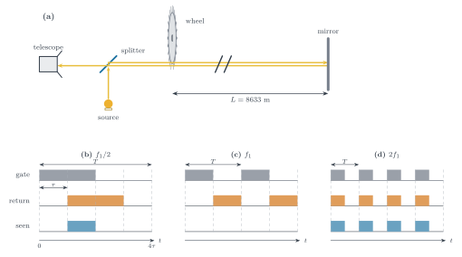
A few years later, a set of electrical experiments unrelated to light produced another number that could be written as a speed.
In the mid-nineteenth century, electricity posed a question connecting electrostatic and current measurements: how far apart are the two sets of values obtained for the same charge when it is measured by electrostatic force and when it is measured by the magnetic effect of the current during its discharge? In Leipzig, Wilhelm Weber and Rudolph Kohlrausch used a single Leyden jar to apply both kinds of measurement to the same charge [3, §2.4.8]. The measurement proceeded along two routes.
The electrostatic route.
Kohlrausch first touched a conducting sphere to the inner conductor of the Leyden jar and removed part of the charge; from the change in the jar's voltage before and after contact he determined what fraction of the jar's original charge the sphere carried away. The charge on the sphere was measured with a Coulomb torsion balance. The balance hangs a light horizontal rod carrying a small ball at its end from a fine fiber; the electric force between the charge under test and a fixed ball in the balance twists the rod, and the restoring torque of the suspended fiber or quartz thread balances it. Over the range of twist, the angle through which the fiber twists is proportional to the torque applied, so the angle is first calibrated against force. Knowing the force, the separation of the two balls, and the ratio of their charges (controlled by touching the balls so as to divide the charge equally), one then uses Coulomb's law
F_{\rm e}=k_{\rm e}\frac{q_1q_2}{r^2},to determine the charge calibrated by electrostatic force. Here q_1 and q_2 are the charges on the two balls, r is the separation of their centers, and Fig. 3(a) marks these three quantities.
The current route.
The same Leyden jar was discharged in a brief pulse through a homemade ballistic galvanometer. For a short time the discharge current passed through the coil and gave it an impulse through magnetic action, setting it swinging together with a pointer or small mirror; the maximum amplitude of the first swing is proportional to this impulse, and the impulse is proportional to the time integral of the discharge current, \int I\,\mathrm dt. This step assumes that the discharge time is much shorter than the swing period of the galvanometer, so that the swing has barely begun before the discharge ends and the whole discharge can be treated as an instantaneous impulse; only then does the maximum deflection correspond directly to Q=\int I\,\mathrm dt. The charge obtained this way is calibrated by the magnetic action of the current.
The two routes measured the same charge in the same jar, one by converting it into a discharge current and the other by converting it into an electrostatic charge; Fig. 3 shows the two routes side by side.
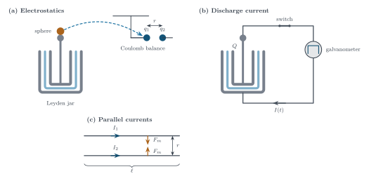
The constant k_{\rm e} in Coulomb's law measures the strength of the electrostatic interaction. The magnetic action of a current has a corresponding constant k_{\rm m}. For two long parallel straight wires, the magnetic force per unit length is
As in Fig. 3(c), I_1 and I_2 are the steady currents in the two wires, r is the distance between them, and F_{\rm m} is the magnetic force on a segment of length \ell. Currents in the same direction attract each other, and the attraction is stronger for larger currents or smaller separations. The parallel wires are used here as a simple geometry to represent the constant of magnetic action k_{\rm m}; the current in the actual discharge circuit of Fig. 3(b) is written I(t).
Current is the charge passing through a cross section per unit time, and a steady current satisfies I=Q/t. From the expression for F_{\rm e}, the unit of k_{\rm e} is \mathrm{N\,m^2/C^2}; from the expression for the magnetic force per unit length of the wire, the unit of k_{\rm m} is \mathrm{N/A^2}=\mathrm{N\,s^2/C^2}. Dividing one by the other cancels the units of force and charge, leaving only a squared length over a squared time:
The measurements of Weber and Kohlrausch correspond to v_{\rm e} of about 3.11\times10^8 m/s [3, §2.4.8].
In 1857 Gustav Kirchhoff, starting from the electrodynamic theory then current, calculated that an electric disturbance on a thin wire propagates at about 3.1\times10^8 m/s, and noted that this agrees with the speed of light in vacuum, without explaining it further [3, §2.5.4; 2, p. 240].
Fizeau measured the round-trip time of light with a gear, Weber and Kohlrausch compared the electrostatic interaction with the magnetic effect of a current, and Kirchhoff connected the electrical parameters obtained from the latter with the propagation speed of an electric disturbance along a wire. These works gradually converged on a single question: why should a speed obtained from electricity come so close to the speed of light? The electromagnetic theory Maxwell went on to build gave this closeness a physical explanation.
3. The Electromagnetic Theory of Light: 1861–1865
After exploring mechanical models of the ether, James Clerk Maxwell in the 1860s unified the laws of electricity and magnetism into a single field theory. The key step was to add the contribution of a changing electric field to the equation describing the magnetic effect of a current: a changing magnetic field is linked to an electric field, and a changing electric field is linked to a magnetic field as well. From this he solved for electromagnetic waves able to propagate through space and calculated their speed [3, §§4.3.3, 4.4.6; 2, pp. 240–242].
In vacuum, with no charges or currents, the electric and magnetic fields satisfy Maxwell's equations:
\mathbf E is the electric field strength (unit V/m), \mathbf B is the magnetic induction (unit T), and \epsilon_0 and \mu_0 are two constants fixed by electrical measurements [4, §9.2.1]. The two divergence equations say that in this charge-free region the electric and magnetic field lines have no sources or sinks; the two curl equations say that a changing magnetic field excites a circulating electric field around it (Faraday's law of induction), and a changing electric field excites a circulating magnetic field around it (Ampère's law together with the term Maxwell added). The latter two entangle \mathbf E and \mathbf B; taking a curl separates them.
Take the curl of both sides of Faraday's law:
The second step exchanges the order of the time derivative and the spatial curl and substitutes the other curl equation. On the left, use the identity \nabla\times(\nabla\times\mathbf A)=\nabla(\nabla\cdot\mathbf A)-\nabla^2\mathbf A, where \nabla^2=\partial_x^2+\partial_y^2+\partial_z^2. In vacuum \nabla\cdot\mathbf E=0, so the first term vanishes, and hence
Applying the same operation to the other curl equation and using \nabla\cdot\mathbf B=0, \mathbf B satisfies the same equation. This is exactly the wave equation, and the propagation speed of its traveling-wave solution is
Taking the solution of these equations to be a plane wave propagating in one direction, the two divergence equations require the electric and magnetic fields to be perpendicular to the propagation direction, and the two curl equations further require them to be perpendicular to each other; it is therefore a transverse wave. Figure 4 shows its electric field, magnetic field, and propagation direction.
Since k_{\rm e}=1/(4\pi\epsilon_0) and k_{\rm m}=\mu_0/(4\pi), the wave speed v=1/\sqrt{\mu_0\epsilon_0} is exactly the v_{\rm e}=\sqrt{k_{\rm e}/k_{\rm m}} of the electrical measurements. Substituting the electrical measurements of Weber and Kohlrausch gives about 3.11\times10^8 m/s; on the other hand, the speed of light measured by Fizeau with a gear and a mirror is about 3.15\times10^8 m/s. The first result comes from charges and currents, the second from the round trip of light, and the two independent routes give speeds that are very close [3, §4.3.3].
The wave speed calculated from electrical theory is close to the independently measured speed of light, and this wave has the transversality that polarization requires (Fig. 4). Light therefore need not be another wave that merely happens to have the same speed: light itself is an electromagnetic wave. What had been unknown—what exactly was vibrating in light—now had a concrete answer: the electric and magnetic fields [3, §§4.3.3, 4.4.6].
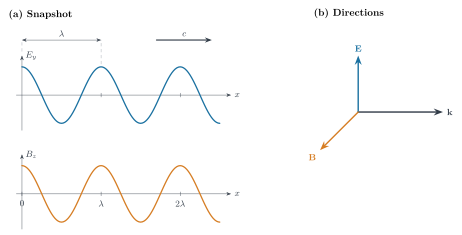
If light is an electromagnetic wave, could an electrical device also emit such waves? At the time it was impossible to make a current oscillate as fast as visible light, but slower oscillations should produce waves of longer wavelength. Although invisible, they should be detectable through their action on another electrical device.
4. Hertz's Experiment: 1886–1888
What Heinrich Hertz set out to decide was which electrodynamic scheme within the framework of Hermann von Helmholtz was correct, not to measure the speed of light directly. In the process, he developed a suite of techniques for generating waves, detecting them, and measuring their wavelengths [3, §6.3.11, §6.4.1, §6.4.3–§6.4.6].
The transmitter consisted of two metal conductors separated by a very narrow gap, the spark gap. A Ruhmkorff coil charged the conductors; when the voltage rose enough to break down the gap, a spark connected the two conductors, and charge oscillated back and forth between them, forming a rapidly oscillating electric dipole that radiated into space [3, §6.4.3; 1, §3.6.1].
The receiver was a piece of wire bent into a loop or drawn out straight, with a very small gap in the middle, small enough that the spark could be seen only in the dark. Placed a few meters from the transmitter, if the radiated electric field drove charges in the wire and built up a high enough voltage across the gap, the gap broke down and a small spark visible to the eye appeared [3, §6.4.3; 1, §3.6.1]. Seeing a small spark shows only that some electromagnetic disturbance reached the position of the receiver; by itself it cannot distinguish the nearby electrostatic induction from the distant radiation, nor does it give the wavelength. Hertz went on to change the orientation of the receiver and to reflect these waves from a metal plate, observing how the received effect varied with position.
Rotating the receiver to determine the direction of vibration.
Keeping its position fixed and turning the receiver about its own axis, the strength of the spark varies with orientation, and in some orientations the spark disappears. The receiver couples to both the electric and magnetic fields, and its response differs with geometry; at a suitable orientation and distance, the spark is driven mainly by the electric field. Not every orientation of the receiving loop can be treated as a pure electric-field probe.
Placing a metal plate on the opposite side.
The emitted wave and the wave reflected from the plate's surface superpose in front of the plate, forming a standing wave.
Moving the receiver along the direction perpendicular to the plate.
The spark is strongest at some positions and disappears at others, and the positions of disappearance are equally spaced.
In the configuration that mainly probes the tangential electric field, the positions of minimum reception correspond to the nodes of the electric-field standing wave. Let the plate lie at x=0, with the wave traveling from the x>0 side along -x toward the plate, and the electric field E_y parallel to the plate's surface. Approximate the metal as a perfect conductor, whose interior electric field is zero.
Take a small rectangular loop crossing the plate's surface, with its two long sides along y, of length a, one inside and one outside the metal, and its two short sides along x, of length h, as in Fig. 5(c). Faraday's law of induction gives
Let h tend to zero. Under the condition that the field and its time variation are finite, the change of the magnetic flux tends to zero with the loop area ah, and the electric-field integrals along the two short sides also tend to zero. The two long sides are traversed in opposite directions, leaving
Hence the tangential electric field is continuous across the interface. Inside the perfect conductor E_y^{\mathrm{in}}=0, and the total field just outside the surface also satisfies E_y(0,t)=0, so the plate's surface is a node of the electric field.
Let the incident and reflected waves be, respectively,
where E_0>0 and A_{\mathrm r}\geq0 are amplitudes, \omega is the angular frequency, k=2\pi/\lambda is the wave number, and \varphi is the reflection phase. At the plate's surface x=0, the two waves always cancel:
This holds at every instant, requiring the two coefficients to vanish separately, so A_{\mathrm r}=E_0 and \varphi=\pi\pmod{2\pi}. The reflected wave has the same amplitude as the incident wave and differs in phase by half a period at the plate's surface; superposing them gives
The time factor \cos\omega t is independent of position, and the spatial factor \sin kx determines the amplitude at each point. The positions of zero amplitude satisfy \sin kx=0, that is, x=m\lambda/2, m=0,1,2,\dots; the distance between adjacent nodes is \lambda/2. Moving the receiver along this line and recording two successive positions at which the spark disappears, twice the distance between them is the wavelength. Figure 5 shows the apparatus and the shape of the standing wave.
Sample calculation. If adjacent nodes are 0.50 m apart, then \lambda=1.0 m; if the measured spacing is 0.48 m, then \lambda=0.96 m, and the relative error of the spacing directly becomes the relative error of the wavelength.
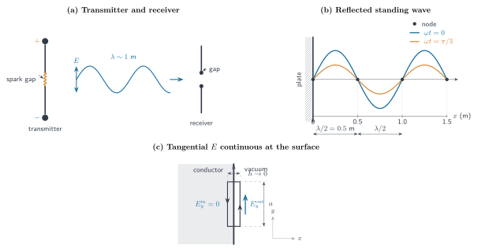
Hertz did not only measure the wavelength. He made these waves reflect and refract, focused them with metal surfaces, rotated the receiver to determine their polarization, and made the incident and reflected waves interfere into a standing wave [1, §3.6.1]. These are precisely the behaviors light exhibited in the first note: light reflects, refracts, polarizes, and interferes, and polarization shows that light is a transverse wave. The waves produced by electricity reproduced these properties one by one, and the same set of equations sets no upper or lower limit on wavelength, applying from the meter scale all the way to the scale of light waves. Hertz called these waves “light rays of very long wavelength” and considered them sufficient to remove doubt about the identity of light, radiant heat, and electromagnetic waves [1, §3.6.1].
The metal plate's surface is a node of the electric field, and the incident and reflected waves differ by half a period at the surface and cancel exactly. The dark center of Newton's rings is likewise related to the half-period phase difference on reflection. At a glass–air interface, how is this phase difference produced?
5. Thin-Film Interference Revisited: Boundary Conditions of Maxwell's Equations
The convex surface of a plano-convex lens rests lightly on a flat glass plate, and between them an air film thickens outward from the point of contact. Under near-normal illumination with monochromatic light, concentric bright and dark rings appear in the reflected light, with a dark spot at the center; counting only the propagation phase difference 4\pi h/\lambda from the film thickness h (where \lambda is the wavelength in air), the point of contact h=0 should be brightest, contrary to observation. In 1802, discussing the dark center of light reflected from a thin bubble, Young added a rule: light reflected at an interface toward a medium of higher refractive index changes phase by \pi; pressing a liquid with refractive index between those of the lens and the plate into the film made the central spot brighten [2, §5.1, p. 182]. To derive this rule from electromagnetic theory, one needs to know what boundary conditions the interface imposes on the electromagnetic field.
Take a linearly polarized plane wave at normal incidence on the planar interface of two nonmagnetic, transparent, lossless media, with the interface at z=0, the medium at z<0 having refractive index n_1 and that at z>0 having n_2, and the phase speed in the medium being v=c/n. The incident wave travels along +z with its electric field along x and angular frequency \omega; at the interface the three waves vary with a common \cos\omega t, with signed amplitudes, written as
E_{0\rm I}, E_{0\rm R}, and E_{0\rm T} are signed real amplitudes (unit V/m); define the reflection coefficient r=E_{0\rm R}/E_{0\rm I} and the transmission coefficient t=E_{0\rm T}/E_{0\rm I}.
The magnetic field direction reverses with the direction of propagation: \mathbf E\times\mathbf H points along the propagation direction, and with E along x, waves traveling along +z and -z have H_y=+nE/(\mu_0c) and -nE/(\mu_0c) respectively [4, §9.3.1]; the H_y of the three waves at the interface are
At the interface:
Continuity of the tangential electric field.
The rectangular-loop derivation of section 4 (Fig. 5(c)) applies here as well, giving E_{\rm I}+E_{\rm R}=E_{\rm T}.
Continuity of the tangential magnetic field.
There is no free surface current at the interface; applying the Ampère–Maxwell law to a small loop crossing the interface, the displacement-current term vanishes as the loop narrows, giving H_{\rm I}+H_{\rm R}=H_{\rm T} [4, §9.3.1, Eq. (9.74)].
Canceling the common time factor, multiplying both sides of the magnetic-field equations by \mu_0c, and dividing by the incident amplitude, these become, in terms of r and t,
Eliminating t gives
Both are real numbers, so their signs directly give the phase: when r>0 the reflected and incident waves are in phase, and when r<0 they differ by \pi; t is always positive.
For air to glass, taking n_1=1 and n_2=1.5 gives r=-0.2 and t=0.8; in the reverse direction r=+0.2 and t=1.2. Going from a rarer to a denser medium makes r negative and reverses the sign of the reflected wave; going from denser to rarer makes r positive and keeps the reflected wave's sign. Figure 6 draws these two directions together.
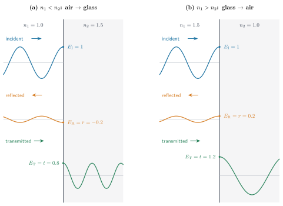
Return to Newton's rings. On both sides of the air film in Fig. 7(a) is glass with n=1.5. The first beam is reflected at the lens's lower surface A, where the incident light approaches the interface from glass toward air, with r_A=+0.2 and no jump; the second is reflected at the plate's upper surface B, where the incident light approaches the interface from air toward glass, with r_B=-0.2 and a jump of \pi. The transmission coefficients at both places are positive, so crossing the interface brings no extra phase. The relative phase contributed by the two reflections is \pi, and adding the propagation phase accumulated by the second beam traveling the extra 2h within the film,
At the center h=0, \delta=\pi, the two beams cancel, and the center is a dark spot.
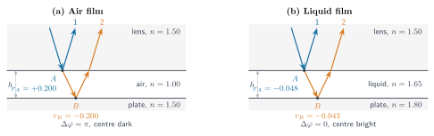
Young's liquid test can be read off the same set of coefficients. Taking the lens n_L=1.50, the liquid n_\ell=1.65, and the plate n_P=1.80, both interfaces go from rarer to denser, so r_A and r_B are both negative and each jumps by \pi; the relative phase is zero, the two beams are in phase at h=0, and the center brightens (Fig. 7(b)).
The difference between the two reflections lies only in the sign of r. What thin-film interference calls the half-wave loss is just the reflected electric field having the opposite sign to the incident field and differing by \pi.
6. Blackbody Radiation: 1859–1905
The previous section applied the boundary conditions of Maxwell's equations to the surface of a piece of glass and explained why the reflected light acquires a half-period phase shift. The same set of equations can be applied to a completely different object: a heated furnace. The wall of the furnace chamber is held at temperature T, and a small hole is opened in the wall. Light entering the hole has to be reflected back and forth inside the cavity many times before it can escape, so the hole is close to both an ideal absorber and an ideal emitter; looking into the hole, one sees radiation in thermal equilibrium inside the cavity. As early as 1792, the English potter Thomas Wedgwood noticed that objects in the kiln, whatever their size, shape, or material, showed the same red color together with the kiln wall [1, §13.1.1, p. 613]. This color is determined by temperature alone and is independent of the objects themselves.
To make this measurable, the light leaking from the hole first passes through a prism that does not absorb light, deflecting different wavelengths into different directions; a detector moves along an arc behind the prism, receiving only a narrow band at each position and reading off the energy entering the detector per unit time, per unit area, and per unit wavelength interval [1, §13.1.1, pp. 613–614]. Plotting the readings against wavelength gives a curve that first rises and then falls: it is almost zero on the short-wavelength side, rises to a peak as the wavelength increases, and falls slowly after the peak. As the furnace temperature rises, the whole curve is raised and the peak shifts toward shorter wavelengths. This spectrum is worth deriving theoretically because Kirchhoff arrived at a universal conclusion in 1859: for a cavity in thermal equilibrium, the ratio of the wall's emissive power to its absorptive power is, at every wavelength, independent of the wall's material, color, shape, and size, depending only on temperature and wavelength [1, §13.1.1, pp. 612–613; 5, §1.1, pp. 1–2]. The essential argument is that if two cavities at the same temperature but with different wall materials radiated differently, connecting them would make energy flow from one to the other; the temperature would no longer be uniform, contradicting thermal equilibrium. Hence the spectrum leaking from the hole is determined by T alone, and changing the furnace or the wall material leaves it unchanged.
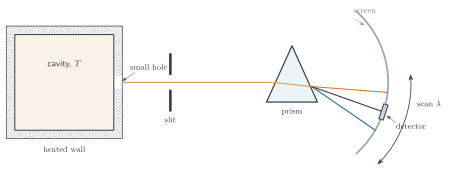
The electromagnetic energy in the cavity between frequencies \nu and \nu+\mathrm d\nu, divided by the cavity volume, is written u_\nu(T)\,\mathrm d\nu:
Light exerts pressure on the cavity wall, and as the cavity expands the radiation does work on the surroundings. Connecting this pressure to thermodynamics allows one to first obtain how the total energy density u(T) varies with temperature.
An electromagnetic wave carries energy and also momentum. A plane wave propagating along +x and polarized along y satisfies
The electromagnetic energy per unit volume is
In the plane wave B=E/c, the electric and magnetic fields each contribute half of the energy, so u=\epsilon_0E^2; the energy flux is given by the Poynting vector, \mathbf S=\mathbf E\times\mathbf B/\mu_0=c\epsilon_0E^2\,\hat{\mathbf x}=cu\,\hat{\mathbf x}, and the momentum density is \mathbf g=\mathbf S/c^2=(u/c)\hat{\mathbf x} [4, §8.1.2, Eq. (8.13), §9.2.3, Eqs. (9.53)–(9.58); 6, §§15.4–15.5]. Averaging over an oscillation period, where the mean of \cos^2 is 1/2, the mean energy density, intensity, and momentum density of this beam are u=\tfrac12\epsilon_0E_0^2, I=\langle S\rangle=cu, and \langle g\rangle=u/c respectively.
This beam falls normally on a perfectly absorbing wall of area A. Within a time \Delta t, all the light in a column of length c\Delta t in front of the wall strikes the wall; the column has volume Ac\Delta t and carries momentum \Delta p=g\,Ac\Delta t, and the pressure on the wall is the momentum per unit time and unit area,
Under complete reflection the light's momentum reverses, the wall bears twice as much, and the pressure is 2I/c [4, §9.2.3, Eq. (9.64); 1, §3.3.4].
In thermal equilibrium the radiation in the cavity is isotropic, and its total energy density is denoted u. Take a piece of wall of area A, with the direction of incidence making an angle \theta with the normal (Fig. 9):
- Energy distribution. The energy density within the solid angle \mathrm d\Omega is u\,\mathrm d\Omega/(4\pi); the directions around the normal form a ring-shaped band, with \mathrm d\Omega=2\pi\sin\theta\,\mathrm d\theta.
- Energy reaching the wall. The component of the velocity along the normal is c\cos\theta, so the energy landing on the wall per unit time is [u\,\mathrm d\Omega/(4\pi)]Ac\cos\theta.
- Momentum transferred to the wall. Under complete reflection the normal component of the momentum reverses, and the normal momentum transferred to the wall per unit incident energy is 2\cos\theta/c.
Multiplying the energy arrival rate by the momentum transferred per unit energy, dividing by the area, and integrating over the incident hemisphere gives the pressure
The last step uses \int_0^{\pi/2}\cos^2\theta\sin\theta\,\mathrm d\theta=1/3. For a black wall that absorbs and emits radiation, in equilibrium the momentum transfer of the incident light and the recoil of the emitted light each contribute u/6, and the total pressure is likewise p=u/3 [7, ch. 5, §7, Eqs. (7.15)–(7.17); 8, §39-3].
Connect the pressure to temperature. Treat the cavity as a thermodynamic system: volume V, temperature T, internal energy U, entropy S, pressure p. Under a quasi-static change of volume, \mathrm dU=T\,\mathrm dS-p\,\mathrm dV. Taking T,V as the variables and differentiating with respect to V at constant temperature, (\partial U/\partial V)_T=T(\partial S/\partial V)_T-p. Replacing the entropy derivative on the right with the Helmholtz free energy F=U-TS: \mathrm dF=-S\,\mathrm dT-p\,\mathrm dV, so S=-(\partial F/\partial T)_V and p=-(\partial F/\partial V)_T; the independence of the mixed second derivative of F from the order of differentiation gives the Maxwell relation of thermodynamics
Applying this relation to the cavity requires two additional relations [8, ch. 45, Eq. (45.7); 9, §63]. Kirchhoff says that u is a function of T alone, independent of the cavity's material, shape, and size, so the internal energy is proportional to the volume, U=u(T)V; Maxwell's theory gives p=u/3. Substituting (\partial U/\partial V)_T=u and (\partial p/\partial T)_V=\tfrac13\,\mathrm du/\mathrm dT,
The integration constant a is determined by experiment. In 1884 Boltzmann explained Stefan's fourth-power law, proposed in 1879, using radiation pressure and thermodynamics [1, §13.1.1].
The energy leaking from the hole is an integral over the hemisphere. The aperture being very small, the share of light in direction \theta crossing unit hole area per second is \dfrac{u\,\mathrm d\Omega}{4\pi}c\cos\theta; integrating over the hemisphere,
M is the power emitted per unit area of the small hole, in W/m^2. Writing M=\sigma T^4 with \sigma=5.670\times10^{-8} W m^{-2} K^{-4} [1, §13.1.1, pp. 613–614, Eq. (13.2)], we have a=4\sigma/c. This is the Stefan–Boltzmann law. Thermodynamics requires only \int_0^\infty u_\nu\,\mathrm d\nu=aT^4; it gives no information about how u_\nu is distributed over frequency.
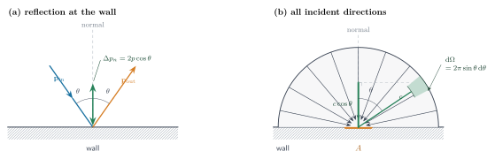
The total energy is fixed, but the spectral shape is still unknown. Write it as the product of the mode density and the mean energy of each mode:
g(\nu)\,\mathrm d\nu is the number of independent vibration modes per unit volume with frequencies between \nu and \nu+\mathrm d\nu, and \langle E_\nu\rangle is the mean energy of each mode at temperature T. First count g(\nu).
Take a cubic cavity of side length L, approximating the cavity wall by an ideal conductor. As with the metal reflecting plate of section 4, the tangential electric field vanishes on the wall. The field inside the cavity satisfies the vacuum wave equation and \nabla\cdot\mathbf E=0. For a standing wave with time dependence e^{-i\omega t}, the boundary conditions require
When n_x,n_y,n_z take positive integers, the solutions are mutually independent. The divergence condition imposes one linear constraint among the three mode amplitudes, leaving two independent amplitudes, so each triple of positive integers corresponds to two polarization modes. A triple containing a zero retains only one mode; when \Lambda\equiv2L\nu/c\gg1, such triples make up a fraction of about 1/\Lambda, which is of the order of the boundary correction and may be neglected in the counting [6, §19.6, Eqs. (19.123)–(19.124), (19.135)].
Regard (n_x,n_y,n_z) as points of a three-dimensional integer lattice, each point occupying a unit cube (the blue cubes of Fig. 10(a)). The lattice points with frequency not exceeding \nu satisfy \sqrt{n_x^2+n_y^2+n_z^2}\le\Lambda=2L\nu/c and lie in the octant n_x,n_y,n_z>0 of the sphere of radius \Lambda. When \Lambda\gg1, the number of lattice points is approximately equal to the volume of the one-eighth sphere, with two polarizations per point:
Differentiating with respect to \nu and dividing by the volume gives the number of modes per unit volume and unit frequency interval
The orange shell of Fig. 10(a) is \mathrm dN=2\cdot\frac18\cdot4\pi\Lambda^2\,\mathrm d\Lambda, where \mathrm d\Lambda=(2L/c)\,\mathrm d\nu. In the limit where the cavity is much larger than the wavelength, this mode density does not depend on the cavity's shape [6, §19.6.4; 10, §52]. Since g(\nu)\propto\nu^2, the higher the frequency, the more modes in a band of the same width.
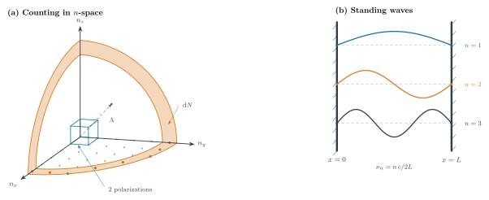
Each standing wave in the cavity is an independent degree of freedom, and its dynamics is that of a harmonic oscillator. Taking the vector potential \mathbf A such that \mathbf E=-\partial_t\mathbf A and \mathbf B=\nabla\times\mathbf A, expand \mathbf A in the spatial shapes of the modes, \mathbf A(\mathbf r,t)=\sum_jq_j(t)\,\mathbf a_j(\mathbf r); each coefficient satisfies \ddot q_j=-\omega_j^2q_j [10, §52, Eq. (52.4); 11, ch. V, introduction]. After normalizing the spatial functions to \int|\mathbf a_j|^2\,\mathrm dV=1/\epsilon_0, in the total field energy \int(\tfrac12\epsilon_0E^2+B^2/2\mu_0)\,\mathrm dV the electric-field term gives \tfrac12\dot q_j^2, the magnetic-field term gives \tfrac12\omega_j^2q_j^2, and the cross terms among different modes vanish by orthogonality:
p_j is the momentum conjugate to q_j. The energy of one mode consists of two quadratic terms, one proportional to p^2 (electric field) and one proportional to q^2 (magnetic field) [10, §52, Eq. (52.8)].
The actual cavity wall exchanges energy with the field through absorption and emission, bringing these modes to thermal equilibrium at temperature T [9, §63].
Suppose a mode is in thermal equilibrium with a wall at temperature T. The classical Boltzmann distribution says that the probability for a mode to lie in the phase-space element \mathrm dq\,\mathrm dp is proportional to e^{-\beta H}\,\mathrm dq\,\mathrm dp, with \beta=1/k_BT [12, §3.8]. The partition function is
This gives the mean energy \langle H\rangle=-\partial\ln Z/\partial\beta=1/\beta=k_BT. The result is independent of \omega: the electric-field quadratic term and the magnetic-field quadratic term each receive \tfrac12k_BT. This is the equipartition theorem. Each mode averages k_BT; multiplying by the mode density,
which is the Rayleigh–Jeans formula [12, §7.3]. It is proportional to \nu^2; as the temperature rises the whole curve is raised proportionally and has no peak. The higher the frequency, the more modes, and each mode receives the same k_BT, so the integral \int_0^\infty u_\nu\,\mathrm d\nu diverges, in direct contradiction with the finite total aT^4 given by thermodynamics [8, §41-2].
The measured spectrum falls with frequency after the peak, and its total is finite. Figure 11 compares the Rayleigh–Jeans formula with the Planck formula, which matches the experimental spectral shape: at the low-frequency end the two are close, while at the high-frequency end the Rayleigh–Jeans curve keeps rising and the Planck curve falls after passing its peak [1, §13.1.1, pp. 614–615; 12, §7.3].
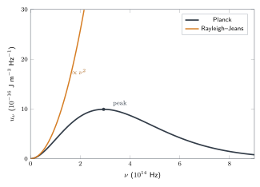
If one keeps the mode density g(\nu) given by electromagnetic theory, the measured spectrum requires the mean energy of each mode to satisfy
At the low-frequency end this value is close to k_BT, and at the high-frequency end it is far smaller than k_BT. Classical equipartition cannot give a finite thermal-radiation spectrum. This is one of Kelvin’s so-called “two clouds.”
References
- E. Hecht, Optics, 5th ed., Global ed. (Pearson, Harlow, 2017).
- O. Darrigol, A History of Optics: From Greek Antiquity to the Nineteenth Century (Oxford University Press, Oxford, 2012).
- O. Darrigol, Electrodynamics from Ampère to Einstein (Oxford University Press, Oxford, 2000; reprinted 2002).
- D. J. Griffiths, Introduction to Electrodynamics, 3rd ed. (Prentice Hall, Upper Saddle River, NJ, 1999).
- S. Weinberg, Lectures on Quantum Mechanics, 2nd ed. (Cambridge University Press, Cambridge, 2015).
- A. Zangwill, Modern Electrodynamics (Cambridge University Press, Cambridge, 2013).
- 郭硕鸿，《电动力学》（第3版，高等教育出版社，北京，2008）。
- R. P. Feynman, R. B. Leighton, and M. Sands, The Feynman Lectures on Physics, Vol. I (Addison-Wesley, Reading, MA, 1963).
- L. D. Landau and E. M. Lifshitz, Statistical Physics, Part 1, 3rd ed. (Pergamon Press, Oxford, 1980).
- L. D. Landau and E. M. Lifshitz, The Classical Theory of Fields, 4th ed. (Pergamon Press, Oxford, 1975).
- C. Cohen-Tannoudji, B. Diu, and F. Laloë, Quantum Mechanics, Vol. 1, 2nd ed. (Wiley-VCH, Weinheim, 2020).
- R. K. Pathria and P. D. Beale, Statistical Mechanics, 3rd ed. (Elsevier, Oxford, 2011).